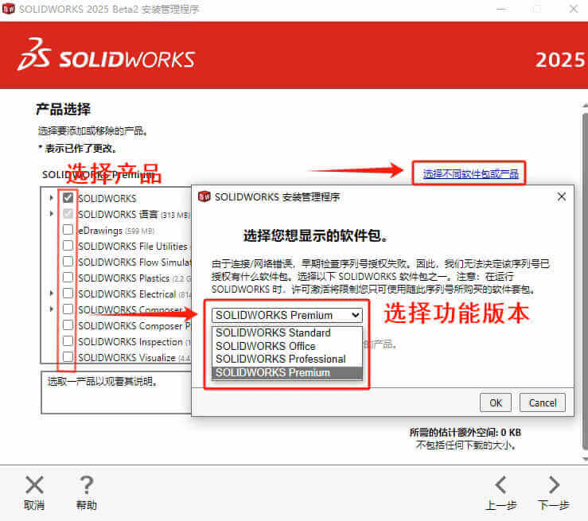
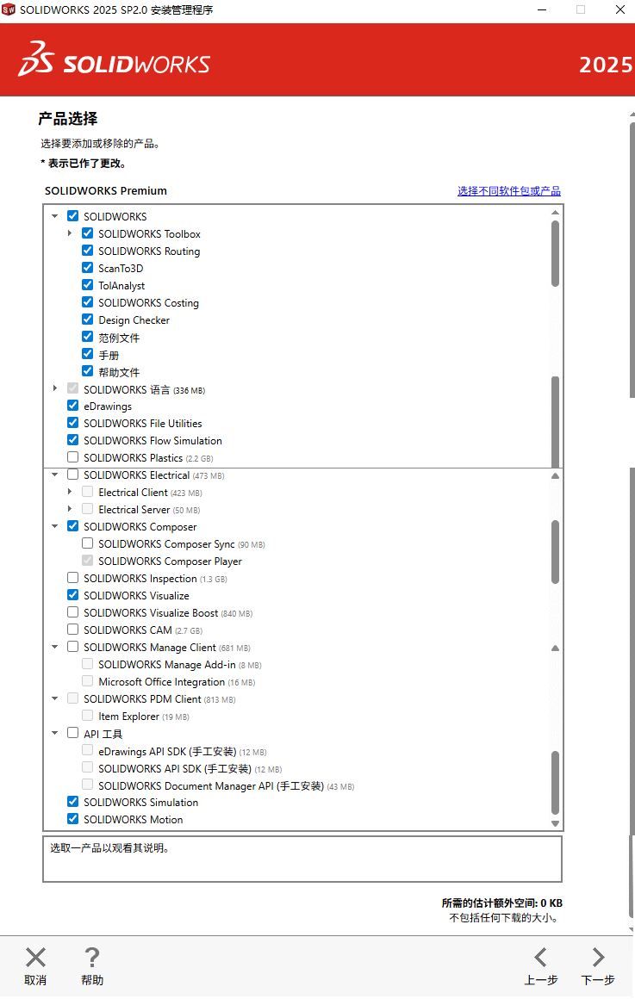
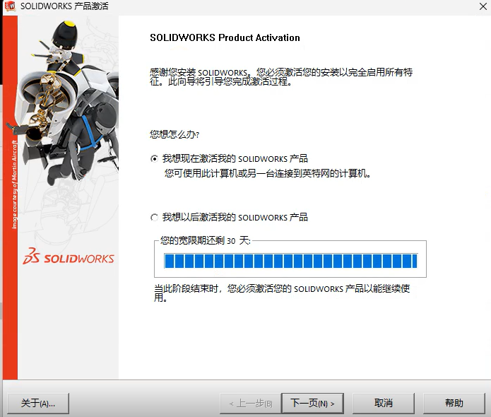
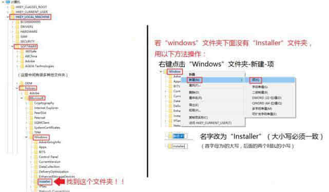
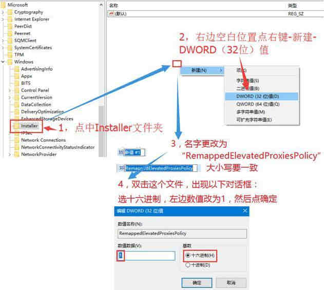

SOLIDWORKS安装向导
包括 SOLIDWORKS 本体单机版，网络版，插件类的安装向导
单机版安装
找到安装程序，建议使用“管理员身份启动”安装程序
..\SOLIDWORKS 20xx SP05 安装包\setup.exe

步骤：
安装类型
选择安装类型：默认新安装就是选【在此计算机新安装】；
序列号
填写序列号（或临时序列号，后面再激活）
选择产品
选择安装产品、位置、Toolbox位置

SOLIDWORKS产品的内容

插件安装（可选）
插件是基于SW程序本体的拓展功能，使用需要先安装SW软件才能使用。例如：Simulation、Motion这些。
与单机版安装区别是在【序列号】填入所需插件的序列号，在下一步的产品选择中勾选所需的插件即可安装。
开始安装
完成安装
安装完成后，如果你是首次安装SOLIDWORKS，那么你将可以试用30天

修复安装
修复安装异常时，可以尝试如下设置：
1.打开注册表编辑器找到如下位置（如果没有就新建）；
1 | HKEY_LOCAL_MACHINE\SOFTWARE\Policies\Microsoft\Windows\Installer |

新建一个 Dword 值，名字为“RemappedElevatedProxiesPolicy”，值为 1；

打开 solidworks 安装程序，选修复安装；
安装完后打开 Solidworks 确认问题解决后，将“RemappedElevatedProxiesPolicy” 的值改为 0。